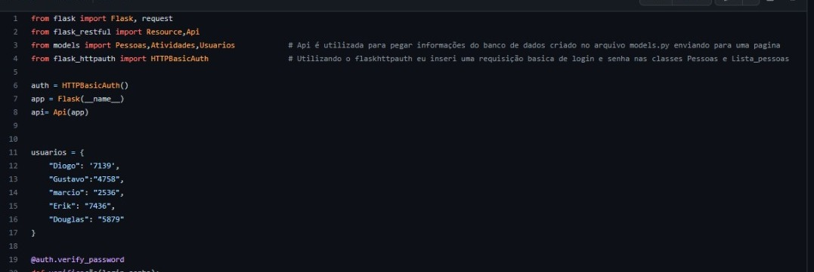

Carta de Apresentação
Olá, meu nome lucas pereira dias e sou residente na cidade de Betim-mg, neste mês se completa 7 meses desde que começei a estudar programação, começei este projeto HTML com intuito de pratica e tambem como uma forma de apresentação do progresso assim como agregar em meu portifolio, Nestes 7 meses estudando pela instituição digital innovation one e com um forte conteudo teorico focada em exercitar a logica computacional/programação,juntamento com um otimo conteudo de estrutura de dados adquirido na universidade Unopar, hoje possuo habilidades como no desenvolvimento com a linguagem {Python}, Framerworks {Flask, Flask-restful e Flask-httpauth}, alem de conhecimento basico com a aplicação dos bancos de dados {SQLalchemy, Postgree} para desenvolvimento de APIs,e as ferramentas { Git,Github}, no momento estou estudando {HTML e CSS} para tentar desenvolver meu primeira site de ponta a ponta, e sigo confiante de que vou conseguir.